Oceanでは、Webサービスとのインテグレーションを主目的としています。ただし、Webサービスと連携をしない、単体でのサービスも提供することが出来ます。ここでは、そのようなプロジェクトのことを、スタンドアロンプロジェクトと呼ぶことにします。スタンドアロンプロジェクトでは、データベースなどは自動で用意され、非常に簡単にサービスを開始することが可能です。
特にWebサービスとの連携が必要なく、小規模での利用が目的の場合は、スタンドアロンプロジェクトが最適です。
まずはOceanの使い方の感覚をつかむために、スタンドアロンプロジェクトでサーバーを起動し、Jabber/XMPPプロトコルをサポートするクライアントアプリケーションから実際につないでみましょう。
この例では、MacOSXで実験を行い、クライアントアプリケーションにはMacOSXに標準で付属しているiChatを利用してみます。
Oceanのインストールが完了すると、いくつかのコマンドが使えるようになります。
まずは、任意のディレクトリに移動し、次のように ocean-standalone コマンドを打ってみましょう
ocean-standalone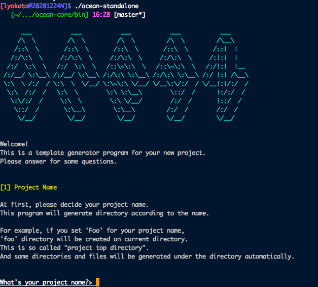
対話方式のシェルの開始されるので、任意に回答を打ち込むと、それに従ってプロジェクトテンプレートが生成されます。ここでは仮に、最初のプロジェクト名の問いに対して foo と回答することにします。残りの問いには、何も回答せずにEnterを押し、デフォルトの設定にします。
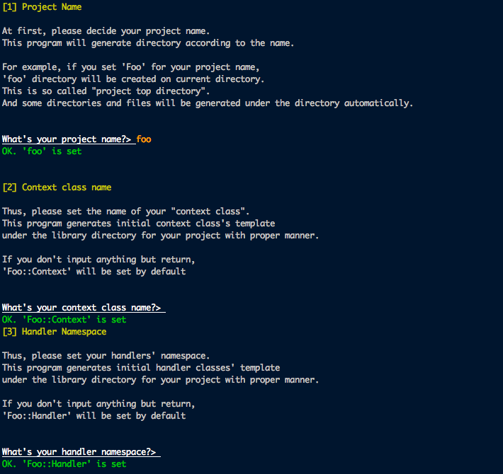 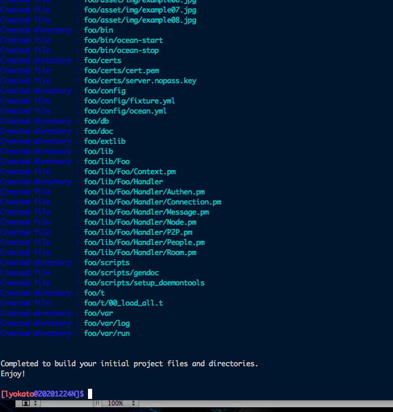カレントディレクトリ内に、新たにfooディレクトリが生成され、さらにその下に、様々なファイルが生成されたことを確認して下さい。このfooディレクトリが、プロジェクトルートディレクトリとなります。
fooの中に移動します。
cd ./foo
スタンドアロンプロジェクトでは、
という三つの段階を踏むだけで、簡単にサービスを開始することが出来ます。
まずはコンフィグファイルを編集してみましょう。
コンフィグファイルは、必要最低限のものがデフォルト値で埋められた状態で生成されています。
場所は、プロジェクトルートディレクトリ/config/xmpp.ymlになります。
では早速編集してみましょう。
vi ./config/xmpp.yml
---
server:
type: xmpp
domain:
- xmpp.example.org
host: 192.168.0.1
port: 5222
backlog: 1024
max_connection: 100000
timeout: 300
timeout_preauth: 10
max_read_buffer: 10000
report_interval: 60
use_stanza_counter: yes
stanza_counter_expiration: 60
max_stanza_count: 1000
pid_file: __path_to(var/run/xmpp.pid)__
context_class: Foo::Context
log:
type: print
formatter: color
level: info
show_packets: yes
filepath: __path_to(var/log/xmpp.log)__
sasl:
mechanisms:
- PLAIN
- X-OAUTH2
# - CRAM-MD5
# - DIGEST-MD5
#tls:
# cert_file: __path_to(certs/cert.pem)__
# key_file: __path_to(certs/server.nopass.key)__
# cipher_list: ALL:!ADH:!EXPORT56:RC4+RSA:+HIGH:+MEDIUM:-LOW:-SSLv2:-EXP:+eNULL
event_handler:
node: Foo::Handler::Node
authen: Foo::Handler::Authen
connection: Foo::Handler::Connection
message: Foo::Handler::Message
people: Foo::Handler::People
room: Foo::Handler::Room
p2p: Foo::Handler::P2P
handler:
db_file_path: __path_to(db/database.db)__
hostを 192.168.0.1 から、127.0.0.1 に変更し、domainを、xmpp.example.orgから、localhost に変更しておきます。
server:
type: xmpp
domain:
- localhost
host: 127.0.0.1
port: 5222
backlog: 1024
次に、フィクスチャファイルを覗いてみます。
ファイルパスは、プロジェクトルートディレクトリ/config/fixture.ymlです。
vi ./config/fixture.yml
users:
- id: user_01
username: kusanagi
nickname: Kusanagi
password: foobar
oauth_token: aaaaaa
profile_img_file: __path_to(asset/img/example01.jpg)__
- id: user_02
username: aramaki
nickname: Aramaki
password: foobar
oauth_token: bbbbbb
profile_img_file: __path_to(asset/img/example02.jpg)__
- id: user_03
username: batou
nickname: Batou
password: foobar
oauth_token: cccccc
profile_img_file: __path_to(asset/img/example03.jpg)__
- id: user_04
username: togusa
nickname: Togusa
password: foobar
oauth_token: dddddd
profile_img_file: __path_to(asset/img/example04.jpg)__
- id: user_05
username: ishikawa
nickname: Ishikawa
password: foobar
oauth_token: eeeeee
profile_img_file: __path_to(asset/img/example05.jpg)__
- id: user_06
username: saito
nickname: Saito
password: foobar
oauth_token: ffffff
profile_img_file: __path_to(asset/img/example06.jpg)__
- id: user_07
username: paz
nickname: Paz
password: foobar
oauth_token: gggggg
profile_img_file: __path_to(asset/img/example07.jpg)__
- id: user_08
username: borma
nickname: Borma
password: foobar
oauth_token: hhhhhh
profile_img_file: __path_to(asset/img/example08.jpg)__
relations:
- follower: user_01
ユーザー名、ニックネーム、プロフィール画像等、ユーザーの最低限の情報が設定されていることがわかります。プロジェクトテンプレート生成時に、8人のデモユーザーが登録されています。
必要であれば、このファイルを編集して、ユーザーの追加、削除、編集を行います。
今回は、デフォルト状態のままデモユーザーを使用して進めることにして、変更は加えずにファイルの編集を終わります。
これで準備が出来ました。
起動するときは、次のように プロジェクトルートディレクトリ/bin/ocean-startスクリプトを実行します。
perl ./bin/ocean-start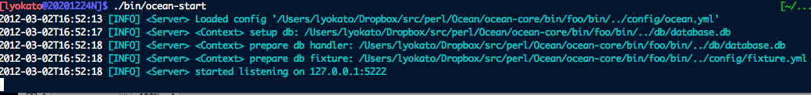
ログが流れ始めました。サーバーを起動することが出来たのが分かります。
では次に、iChatを起動してみましょう。
対話の実験のために、ユーザー二人分を登録します。
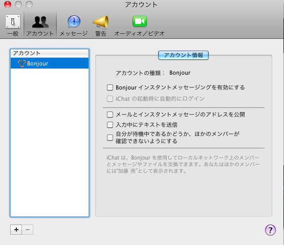アカウント管理画面左下の「+」ボタンを押してユーザーを追加します。
次のように設定項目を埋めて、新規アカウントを登録します。
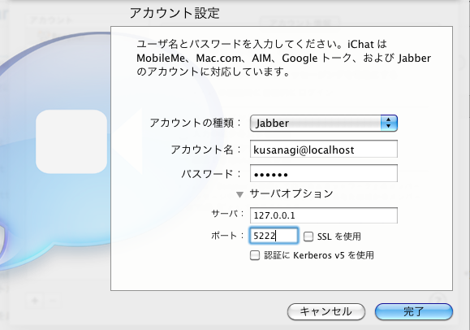パスワードにはfoobarを入れます。デフォルトで作成されるデモユーザーの初期パスワードは全てfoobarになっています。これは上記のフィクスチャファイルで設定されています。(今回は実験なのでこのままパスワードを利用しますが、実運用する際には勿論パスワードは変更することが推奨されます。)
同様にもう一人登録します。
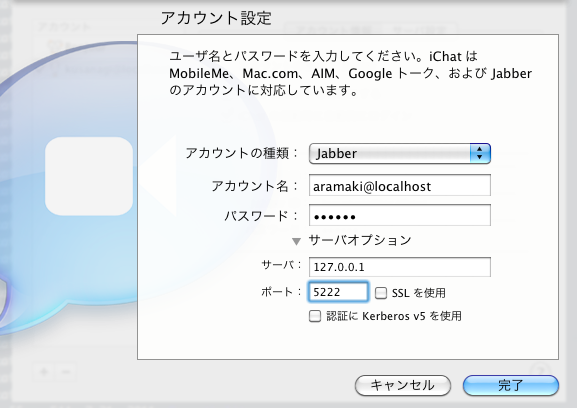アカウント欄を確認すると、二つのアカウントが追加されたことが分かります。
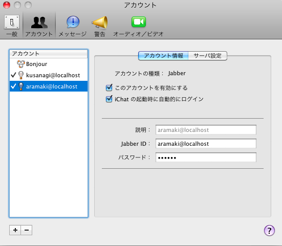アカウントをダブルクリックしてウィンドウを開き、現在の状態を「チャット可能」にしてみます。
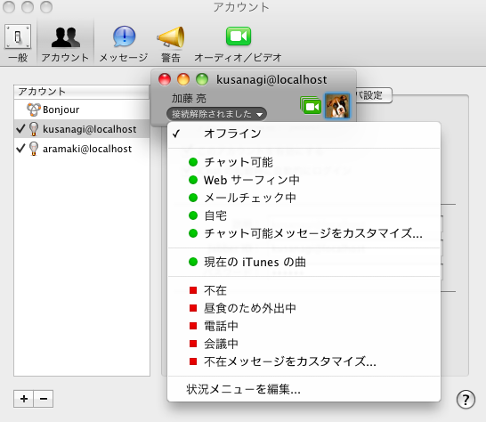ウィンドウがログイン状態になりました。
オフラインの友人がグレーで表示されているのがわかるでしょうか。
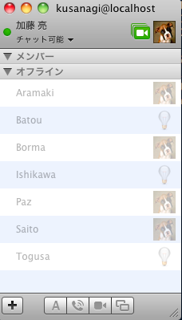サーバー側でログが流れていることを確認しておきましょう。
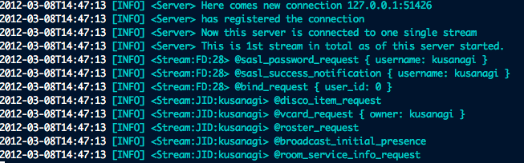同様にもう一人のユーザーも、状態を「チャット可能」にしてログインしてみます。
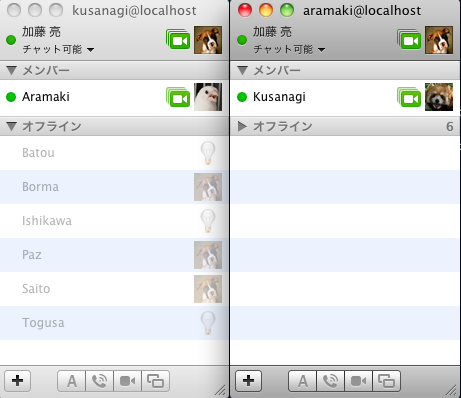kusanagiとaramaki、お互いに相手がログイン状態になっていることが確認できます。
相手に話しかけてみましょう。
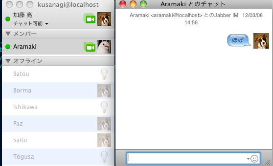対話できることが確認できたでしょうか
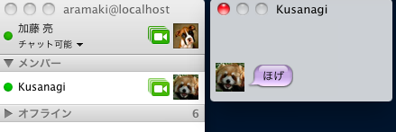このように、スタンドアロンプロジェクトを利用すると、非常に簡単にJabber/XMPPのサービスを開始することが可能です。